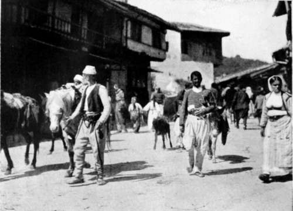
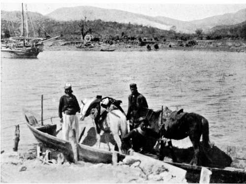
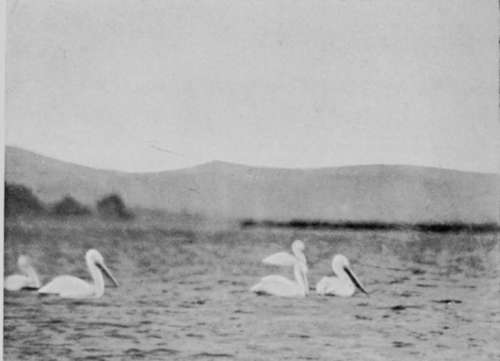

IV. The Quest Of The Pelican : Montenegro
Description
This section is from the book "Bird-Hunting Through Wild Europe", by R. B. Lodge. Also available from Amazon: Bird-Hunting Through Wild Europe.
IV. The Quest Of The Pelican : Montenegro
With the assistance of the law student before referred to. M. Saverias Djouraschkovitch, I began to make preparations for my search. The first thing was to find somebody who knew the country and the best localities for birds, and I presently engaged a certain Nikola, who had been recommended to me as a great chasseur, for four crowns a day (Austrian currency seems to be in general use here).
On the ioth of April I began operations by a visit to the mouth of a river about twenty miles off, where I was told Pelicans were generally to be seen.
A pack-horse was engaged to carry cameras and my sleeping-bag and rugs, while Nikola, Djouraschkovitch, and I walked. Nikola carried my small collecting gun, of which he had taken possession as a matter of course, and a fine Hobby having been seen in a tree soon after we had passed the town, I sent him after it to see what he could do. After missing it twice he came back without the bird. As a chasseur Nikola was certainly a failure, for he was a bad shot both with my gun and his own, a dilapidated double muzzle-loader fastened together with string and wire, with a bit of stick for a ramrod. My gun, a double '410, was a mistake. While too small for very large birds, it shot so close that it was very difficult to hit a small bird, and when it did, the bird was generally knocked to bits and spoilt as a specimen. I certainly made some good and long shots with it at the larger Herons and Hawks, but I should not like to say how many were missed.
Pack-Horses
Montenegrin Ferry
Goldfinches and many other small birds were very numerous in the fields on each side of our road, and on the banks of a small, navigable river, which we crossed in a very primitive ferryboat wound up by a rope, were many Sandpipers [Totanus hypoleucus). Magpies flew constantly over the fields and perched on the roadside trees, in which were many half-finished nests. Hooded Crows were also nesting, but the most advanced nest at this date only contained one egg. As we neared our destination birds began to be more plentiful, many Godwits feeding in the swampy places, while Marsh Harriers flew over the plains ; and once we saw a very light-coloured Harrier, either Cyaneus or Pallidus, sweeping to and fro over a small marsh.
A pair of Sea Eagles then flew past us, and presently I saw three large, heavily-built birds flying low down, with their heads drawn back and large beaks projecting in front. They were unmistakably Pelicans, the first I had ever seen in a wild state. It seemed a good omen for this first day of actual search, and my hopes began to rise. Seeing birds, however, is one thing, and photographing them is something- very different. I knew this well enough before from many a bitter experience, and the present case was to prove no exception to the rule.
On arrival at a small village mostly inhabited by Albanians we had something to eat, while a boat was got ready with three men, as the current is of exceptional strength. Two of these men were armed with magazine rifles, for we were now on the frontier, where there is a constant state of hostility, and bloodshed is a com-mon occurrence. The revolver is a part of the national costume in Montenegro, and is always worn even in the towns, but along the frontier the rifle is also almost universally carried. These are Mausers provided by Russia, and every able-bodied Montenegrin has one, and is expected to turn out in case of need. They are but a small and poor nation, but are always under arms. I was told that even the unmarried girls over a certain age have rifles served out to them, and are trained in their use.
At the mouth of the river we saw several Pelicans busy fishing in the sea, while others were resting on the sand digesting their last meal of fish. They were exceedingly shy, however, and it was impossible to approach within about 400 yards, and at a quarter of that range even a Pelican is impossible to photograph with the telephoto lens, while with an ordinary lens it would be nearly invisible. I hardly knew where to look for nests, some information I had received leading me to suppose that they nested among reeds, while these people here assured me they nested on the sand at the water's edge. But as we were divided in the search over a sandy tract with pools of water, bushes, and swamps, suddenly three men armed with magazine carbines and Martini rifles were seen coming towards us. Their attitude did not appear to be friendly, and Djouraschkovitch seemed inclined to avoid them ; but as we were in full sight, and meeting them was perfectly inevitable, I thought it best to put on a bold face and see what they wanted. It seemed that we were on a disputed tract of land, claimed by both Montenegro and Albania, in consequence of the altered course of the river, which had shifted its bed-as rivers occasionally do-some years previously. As I was accompanied by Montenegrins, these Albanians, seeing my camera, thought we were surveying, or taking some steps towards seizing or fortifying the place, and they told us very plainly, through Djouraschkovitch, who acted as interpreter, to go. During the discussion one of them, an evil-looking ruffian, the most unprepossessing of the three, all of whom looked very murderous blackguards, sat down and deliberately pointed his loaded rifle at my head at a distance of about six yards. I have often wondered since what his intention was; I don't know whether he meant to shoot, or whether, perhaps, he thought to frighten me. At any rate I took it as a joke, and, turning my camera at him, pretended to take his photograph. I wish I had done so in reality, it would have been an interesting photograph to have, but, unfortunately, I had no plate ready at the time for instant action.

Continue to:
- prev: The Journey Out To Bosnia And Montenegro. Continued
- Table of Contents
- next: The Quest Of The Pelican : Montenegro. Part 2